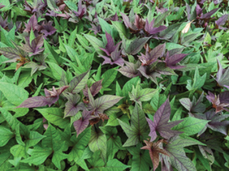

Agriculture for Secondary Schools
Figure 4.1(b): Potato roots
Figure 4.1(a): Sweet potato plants
Source: https://gardeningsg.nparks.gov.sg/page-index/
Source: https://www.simplyrecipes.com/your-
edible-plants/sweet-potato/
guide-to-sweet-potatoes-5208877
Activity 4.1
1. Use different learning sources, including your experience from your
community, library and internet searches, to find out:
(a) The main uses of potato;
(b) How sweet potato contributes to food security in households and the
community; and
(c) Different products made from sweet potatoes.
2. Summarise your observations in your portfolio
Principles and practices of sweet potato production
Choosing a site for sweet potato production
Sweet potatoes thrive in well-drained sandy loam or loamy soil with a pH of 5.5
to 6.5. Heavy clay soils are not recommended because they retain water, leading
to root rot. They require about 500 to 900 mm of rainfall during their growing
season. Sweet potatoes require warm climates with temperatures ranging from
24-35°C.
59
Student’s Book Form Two